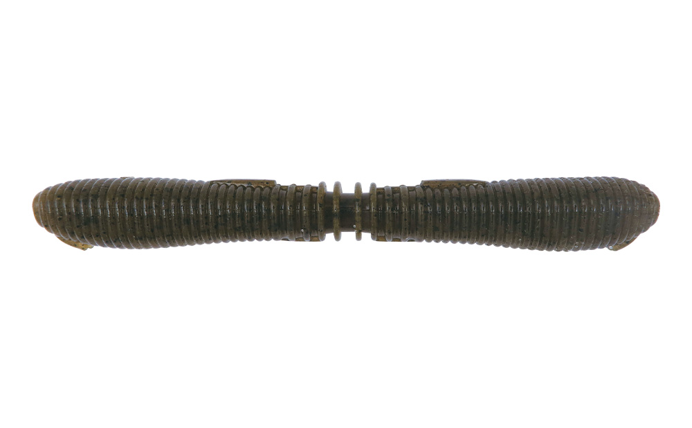
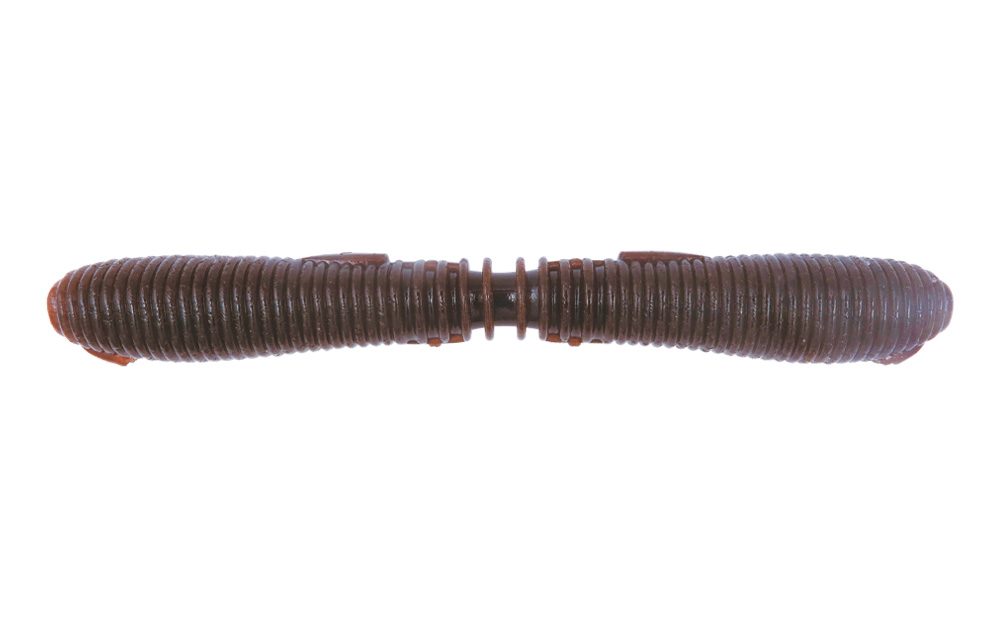
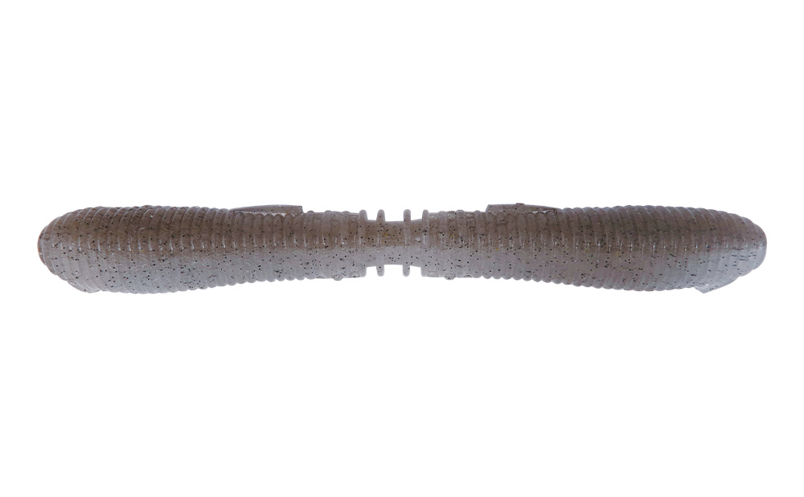
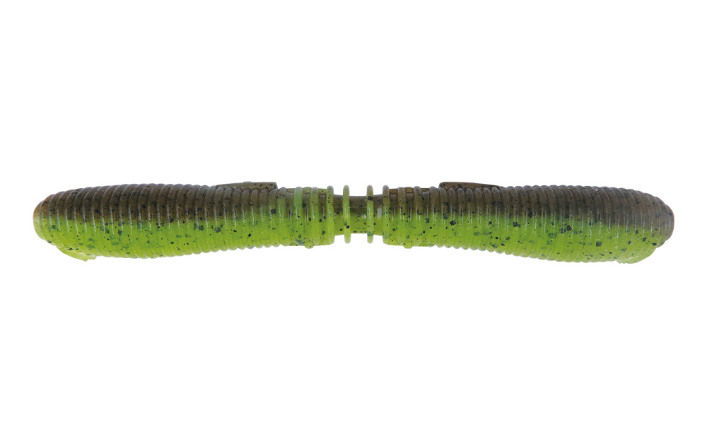

クネリー4.4インチ
（Kunnery 4.4inch）
クネリー4.4インチ（Kunnery 4.4inch）はBottomup（ボトムアップ）のストレートワームです。
ショート＆ファットボディながら自発的に身をクネらせる動きで人気のクネリー3.6インチ。そのサイズアップ版が4.4インチです。ボリューム感と増強された水押しでビッグフィッシュへのアピールを高め、16g超えの自重でカバーの突破力とロングキャスト性能も備えているのが最大の魅力です。

画像出典:ボトムアップ公式HP
スペック
- メーカー
- Bottomup（ボトムアップ）
- タイプ
- ストレートワーム
- 全長
- 4.4インチ
- 自重
- 16g超
- 入数
- 5本
- 推奨フック
- #4/0（オフセットフック）
- カラー
- 全10色
- ターゲット
- ブラックバス
- 価格
- 1,023円（税込）
- 発売
- 2026年10月
- その他
- JB・NBC FECOタックル認定商品
▼今すぐチェック

クネリー4.4インチの特徴
フォールでもトゥイッチでも、自発的なクネリで食わせるビッグフィッシュ用ワーム
-
自発的アクションを生むシェイプ
自発的アクションを生む自重（フォールスピード）を稼ぎつつ、可動域になるクビレを設け、フォール姿勢を安定させる低重心バランスに。3つの要素を4.4インチに合わせて最適化し、トルクフルでライブリーなウォブリングを生む。
-
スナッグレスとフッキングを両立するフックポイントガード
針先をボディラインの外側に埋め込めるので、スナッグレス性能とフッキング性能を両立。ボディを歪めずにフックセットしやすい効果もある。
-
比重と匂いにこだわったマテリアル
自発的アクションを引き出す比重（塩の含有量）バランスで、腹側をより高比重にしてフォール姿勢を安定。エビ・イカ・魚の粉末をトリプル配合したオリジナルの匂いでバイトを促す。
クネリー4.4インチの使い方
基本はノーシンカーリグ（オフセットフック #4/0）。キャストしてフォールさせると、自重で沈みながら自発的に身をクネらせて誘う。
フォールベイトとしてだけでなく、パワフルなトゥイッチベイトとしても使える。カバーの奥に送り込んでフォールで食わせたり、トゥイッチでリアクションを狙ったりと、状況に合わせて使い分けましょう。
クネリー4.4インチの得意な状況
カバー周りやブレイクなどで、大きめのバスを狙う状況が最大の出番。
16g超えの自重を活かして、ノーシンカーでもカバーの奥や遠くのポイントに届かせたい場面で選びたい1本です。
ワンポイント
公式の推奨リグは、ノーシンカーリグ（オフセットフック）・フリーリグ・リーダーレスダウンショットリグの3つで、どれも推奨フックは#4/0です。
よりナチュラルに見せたい時や、もう少し小さいシルエットが良い時は、元になったクネリー3.6インチと使い分けると組み立てやすくなります。
リグの使い分け
| リグ | 推奨フック | ポイント |
|---|---|---|
| ノーシンカーリグ | #4/0（オフセット） | 自発的なクネリをフォールで見せる基本のリグ |
| フリーリグ | #4/0 | シンカーで素早く沈め、ボトムでクネリを見せる |
| リーダーレスダウンショット | #4/0 | ボトム付近で誘い続けたい時に |
※推奨リグとフックはボトムアップ公式サイトの記載より。
オススメカラー
クネリー4.4インチは全10色展開。バス釣りでオススメのカラーを紹介します。

M005 グリーンパンプキンペッパーフィールドを問わない定番実績色。カバーやボトムに馴染みつつ存在感もある。

M003 スカッパノンダークトーンながら水中で映える。クリアからマッディまで実績が高く、ザリガニイメージにも。

T219 KUWASE周囲に溶け込む、食わせに特化した色。ハイプレッシャーやクリアウォーターで頼れる。

T205 グリパンチャート地味と派手のギャップがクネるたびに明滅。濁りやマズメに強い。
画像出典:ボトムアップ公式HP
クネリー4.4インチに似ているルアー
-
 レアリス リグルシャッド2.5
DUO
詳細はこちら＞
レアリス リグルシャッド2.5
DUO
詳細はこちら＞
ベイトフィッシュサイズのシャッドテール。小さめのシルエットで食わせたい時に。
-
 ゴリドラス
ジャッカル
詳細はこちら＞
ゴリドラス
ジャッカル
詳細はこちら＞
ボトムをゴリゴリ擦って誘うスイムベイト。ボトムのバスを狙う時の持ち替え先に。
-
 クラッシュシティ インフィルトレイター
ラパラ
詳細はこちら＞
クラッシュシティ インフィルトレイター
ラパラ
詳細はこちら＞
エラストマー製のスイムベイト。巻いて誘いたい時の選択肢に。